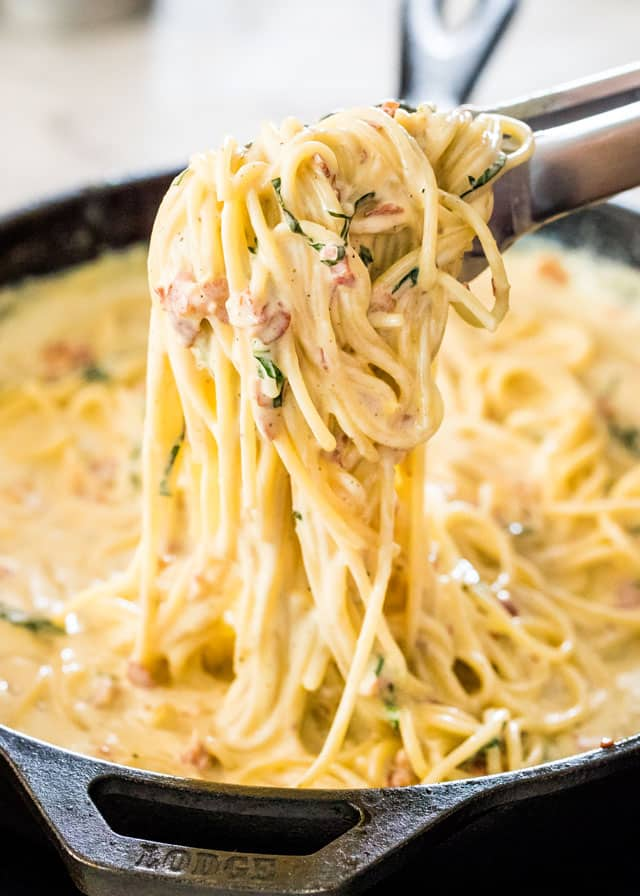

Carbonara

Description
This is a real spaghetti carbonara recipe made the traditional Italian way, without a single drop of cream. It relies solely on egg and cheese to make a luscious, creamy carbonara sauce. Food fit for a king (or queen!) that proves simple can be magnificent.
Economical note - Use bacon instead of guanciale and parmesan instead of parmigiano reggiano for a very respectable version of carbonara that will still make Italians proud. But don't add cream!
Ingredients
- Eggs
- Guanciale
- Spaghetti
- Parmigiano reggiano
- Pepper
- Salt
Steps
- Batons - Cut the guanciale into thick batons. Biting through the golden brown crust into meaty bits of salty guanciale is part of the awesomeness that is carbonara!
- Finely grate the parmigiana reggiano or pecorino.
- Sauce - Whisk together the egg, cheese and pepper in a large bowl. It needs to be a large bowl because the pasta will be stirred into the sauce in the bowl, off the stove, to avoid scrambling the eggs.
- Cook pasta - Bring 4 litres (4 quarts) of water to the boil with 1 tablespoon of salt. Cook the pasta per packet directions. It should be firm, not soft, but fully cooked through.
- Reserve pasta cooking water - Just before draining, scoop out one cup of pasta cooking water. Then drain the pasta in a colander.
- Cook guanciale until golden while the pasta is cooking. You don’t need any oil, the guanciale will fry in its own fat.
- Toss pasta in guanciale - Tumble the hot pasta into the pan with the guanciale then toss so the pasta gets coated in the guanciale fat.
- Transfer into sauce bowl -Tip the hot pasta into the bowl with the egg and use a rubber spatula to scrape out every drop of the guanciale fat into the bowl. That stuff is gold!
- Add 1/2 cup pasta cooking water into the bowl.
- Mix vigorously with the handle of a wooden spoon, spinning the pasta around, for around 30 seconds to 1 minute. Watch as the watery pale yellow liquid magically transforms into a creamy sauce.
- Serve immediately in warm bowls. Pasta waits for no one!
HOME